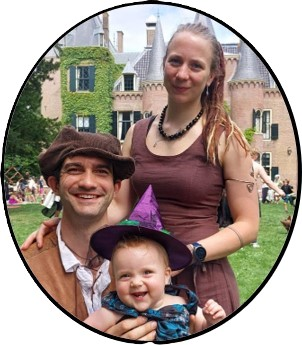

Welkom
Wij, Ines en Harmen, vieren op 18-10-2025 ons huwelijk. We hopen dat jullie erbij willen zijn om er samen een onvergetelijke dag van te maken!

Locatie
Het feest vindt plaats in de Beekdalhoeve.
Adres: Bennekomseweg 160, 6871 KJ Renkum

Planning
De dagplanning is verschillend voor dag- en avondgasten.
Daggasten
- 12:45 – Ontvangst
- 13:00 – Ceremonie
- 14:00 – Receptie + foto's
- 14:45 – Verzamelen deelnemers spel
- 15:00 – Spel (Meer informatie hieronder - schrijf je tijdig in!)
- 17:30 – Diner in de Beekdalhoeve
- 19:00 – Dessert, (volks)dansinitiatie en dansfeest met live band
- 22:30 – Einde
Avondgasten
- 14:45 – Verzamelen deelnemers spel
- 15:00 – Spel (Meer informatie hieronder - schrijf je tijdig in!)
- 17:00 – Einde spel
- 19:00 – Dessert, (volks)dansinitiatie en dansfeest met live band
- 22:30 – Einde
Spel
We zouden Harmen & Ines niet zijn als we aan ons huwelijksfeest niet een eigen draai zouden geven.
Daarom organiseren we 's middags een spel voor wie daar zin in heeft (optioneel). Plaatsen zijn beperkt!
Wat kan je verwachten?
- Twee uur gezelligheid
- Leuke opdrachten, die deels gaan over H&I, deels wat actiever, toegankelijk voor iedereen
- Bij mooi weer buiten, bij regen binnen in de zaal van de Beekdalhoeve
- Een originele prijs voor het winnende team ;-)
Praktisch
- Start: Verzamelen om 14:45, start om 15:00
- Kledij: Voorzie buitenschoeisel en een warme jas
- Einde: Rond 17:00
- Inschrijving: Graag inschrijven voor 15/09/25, via onderstaande knop. Kom je met meerdere gezinsleden? Graag formulier apart invullen voor iedereen die mee wil spelen! Kleine kindjes ook welkom natuurlijk, maar die hoef je niet in te schrijven.
- Vragen: Mail even naar inesharmen@hotmail.com
Meld je hier aan voor het spel!
Tips
Diner
Met de "daggasten" dineren we in kleine kring in de Beekdalhoeve.
Voor de avondgasten die ook al 's middags aan het spel willen deelnemen (leuk!), vragen we jullie vragen op eigen gelegenheid jullie diner te regelen (dessert is voorzien!). Je kunt hiervoor reserveren in het restaurant van de Beekdalhoeve (het restaurant is vrij populair, dus doe dit bijtijds!), of eventueel in een nabijgelegen restaurant, zoals ...,... of .... Voor een lunch kan je naast in de Beekdalhoeve ook terecht bij het naastgelegen Boscafe "de Beken".
Accomodatie
FAQ
- RSVP? Ja, we vragen je ons te laten weten of je erbij bent (en met hoeveel) voor 15-09-2025, via inesharmen@hotmail.com
- Is er parkeergelegenheid? Ja, er zou genoge parkeermogelijkheid op het terrein van de Beekdalhoeve moeten zijn. Uiteraard stimuleren wij ook onze gasten om met de fiets of het OV te komen waar mogelijk ;-).
- Ik wil naar huis, maar jullie staan hard te dansen op de dansvloer. Mag ik jullie storen? Ga vooral lekker naar huis als jullie daar zin in hebben, of doe een snelle zwaai ;-).
- Zijn kinderen welkom? Gezellig! Laat even weten met hoeveel jullie precies komen op voorhand, dan zorgen wij dat we er op voorzien zijn!
- Die dresscode - is dat verplicht? Nee, je kent ons toch! Doe vooral aan waar je je lekker in voelt. Als dat toevallig een herfstkleur is die er ook nog eens netjes uitziet, is dat alleen maar mooi meegenomen. Maar als je graag in kluskleding komt, juichen we dat uiteraard ook toe.
- Mogen wij een stukje brengen? Voor daggasten zal er ruimte zijn tijdens de ceremonie, bespreek dit tijdig met ons! Voor avondgasten: We hebben een behoorlijk strakke planning en willen graag maximaal genieten van ons bandje. Wil je echt graag een stukje brengen? Meld het even op voorhand zodat we kunnen kijken wat de beste timing is, en houdt het zeker korter dan 5 minuten!
- Cadeautips? Bijdrages voor nieuwe fiets(en), waarmee we ook Merel en Nathan makkelijk kunnen vervoeren, worden zeer gewaardeerd (maar het grootste cadeau is jullie aanwezigheid).